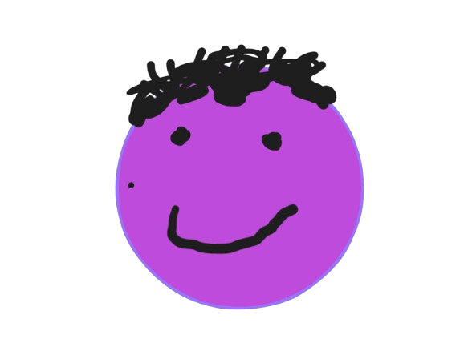

I effectively just wanted a page to post sort of like blogs. So my thoughts and ideas on various things going on, and other concepts. At the risk of sounding pretentious, I guess that I consider myself to be some sort of like modern philosopher lol.
I'm against many modern websites feeling bloated with code and other things going on, and I'm not super versed in website design. Then you just have this place out in the void of cyberspace for me to talk about the quaint curiosities that touch my soul.. Hope you like reading!
08.01.26 - Why people don't want to work
08.01.26 - Why are birth rates falling?
07.31.26 - Why must I log in? (Rant)
07.31.26 - What's seriously making people alone?
07.30.26 - Humans are losing their ability to feel